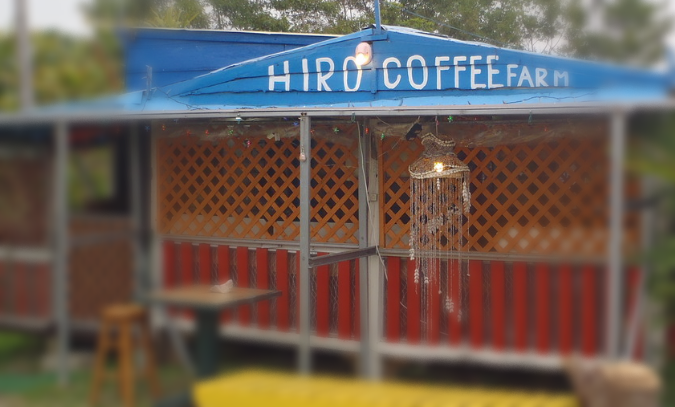

コーヒーの木は、赤道を中心に南北へ緯度25度のエリアに広がっていてこのゾーンを「コーヒーベルト」と言います。
10年程前に、沖縄でも栽培している方がいるということで訪ねて行ったことがあります。那覇空港から三時間以上かかったと思います。
沖縄県国頭郡東村に有る「ヒロ・コーヒー・ファーム」です。
電話連絡をしてコーヒーの木を見せてほいことを伝えていたのですが、行ったとき、最初あまり歓迎されていない雰囲気でした。
誰から聞いてきたのかなどいろいろ聞かれていて、ある別の農園の名前を言ったとき不機嫌になった様子でした。よく聴くと、コーヒー栽培を持ちかけて詐欺まがいのことをしている人がいるらしく迷惑しているとのことでした。
広島から来てコーヒー焙煎の勉強をしてるい話などをして、やっと心を開いてくれました。そうすると、早いもので直ぐにコーヒーの木を見にいことトラックで連れていってくれました。沖縄では台風などで倒れたりするのでそれらの工夫の話や実の着き方など、栽培の難しさを教えて頂きました。
ヒロ・コーヒー・ファームでは、土鍋で焙煎をしていて焙煎の仕方などとても親切に教えて頂きました。
ヒロさん、ありがとうございました。
最近は、息子さんらしい方がヒロ・コーヒー・ファームを営んでいると聞きました。
さて、コーヒーの木は通常は二～三年でジャスミンのようなかおりのする白い花をつけるようになります。受粉後数ヶ月で実がつき始めます。最初は、緑色で硬い実が熟して赤くなります。この色や形がさくらんぼに似ていることから「コーヒーチェリー」と呼ばれています。
このコーヒーチェリーの種がコーヒーの豆なんです。

コーヒーの実からコーヒーの豆を取り出す肯定はいくつかり方式があります。
ナチュラル方式は、摘み取ったチェリーをそのまま乾燥させてから脱穀して取り出す方法と外皮をはぎ取ってから醗酵槽に入れて粘土質の部分を剥がしやすくして水で流すウォッシュド方式などがあります。
コストは、ウォッシュドの方がかかります。そのため、生産量、売上げ以外にも地形などの問題で水の水質の良さなど条件がそろわないとコストをかけられないという課題が沢山あるのが現状のようです。
香珈珈琲では、生の豆を焙煎する前にハンドピックして悪い豆を選別しています。20年前は、悪い豆が沢山含まれていましたが最近は現地での選別などされていたり品質は良くなっています。しかし、それでも悪い豆が有るのでハンドピックは欠かせません。
虫食い、病気のもの、変色などの他にも石ころなどが入っていることがあります。焙煎前では悪い豆だと分からない豆もあるので、焙煎後にもハンドピックを行っています。
ヒロ・コーヒー・ファームから那覇へ帰る頃には日が暮れて、本当に真っ暗になるんです。ヒロ・コーヒー・ファームの有る辺りの道は街灯もなく真っ黒な道を何キロも車で帰るのはちょっとスリルがありました。